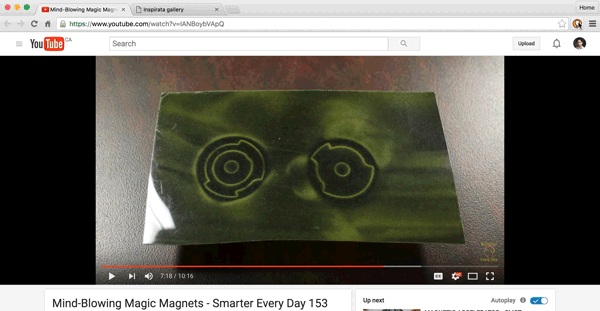

Inspirata: for what inspires you
My site has a little section called Clippings. It's meant as a visual record of some of the things I've found inspiring on the web. How do I add new items to this visual record? Well, I'm glad you asked!
About a year ago, I cobbled together a Chrome extension for exactly this purpose: screen grabs from any webpage. Releasing it on the webstore has been on my backburner ever since. Over the last few weeks, I've spent a bit of time improving it and today, I'm ready to release it for broader testing. I call it Inspirata. Inspirata can be downloaded from the Web Store, and it works like this:
- Click the Inspirata icon button.
- Select part of the page to save.
- Enter an optional caption, et voila!

Bookmarks and breadcrumbs
Bookmarks are like breadcrumbs. Hansel and Gretel left a trail of them to follow home. But GPS made this application of breadcrumbs obsolete! In a similar fashion, search engines killed bookmarking. Rather than browsing your curated bookmarks to find your way to content, you can just search for it.
Bookmarks, like breadcrumbs, go stale quickly. When a website goes down, the bookmark becomes useless, just like Hansel's breadcrumbs which got eaten by birds. When a page does dark, your bookmark leaves no record of what used to be there. And when your bookmarking service gets turned down, say bye bye to your carefully curated archive!
Bookmarks, like breadcrumbs may be delicious but aren't very appealing. A URL has no appeal in itself, only the content at that URL does. And the bookmark does not capture anything about that content: neither the content itself, nor the presentation, nor a deep link into which part of that content spoke to you. A pile of breadcrumbs, like a pile of bookmarks, is pretty nondescript.
Why?
I'm an avid user of little paper notebooks that I carry around in my pocket, along with a trusty black pen. Sometimes while strolling down Valencia St on an errand, I'll have an idea, stop and jot down it down using a wall or street light for support. This way I don't get sucked into my phone, and capture whatever's on my mind. Even if I don't revisit my note, the act of writing itself has served a purpose. This notion is found explicitly in the Field Notes tagline: "I'm not writing it down to remember it later, I'm writing it down to remember it now".
Inspirata serves a similar purpose for content on the web. If something inspires me, I want to capture it, not for the purpose of revisiting later or sharing socially, but for the act itself. Perhaps a utilitarian argument can be made as well: being on the lookout for inspiration helps to maintain a sharp and active eye.
I am interested in being more creative in my consumption. Over the last year, I have developed a habit of writing a summary after finishing each book, as if I was going to share it with others. This forces me to gather my thoughts on the subject, sometimes even taking notes while reading or listening to make my summary more complete. I'm hoping this will increase retention and engagement. Inspirata can perhaps serve a similar purpose in my web browsing endeavors.
Ease of use is (always) key
I continue using notebooks because of their amazing usability. The battery is never dead, it's quick to turn on (open up, uncap pen, good to go), and writing is a pleasant experience overall (perfect pen tip tracking, zero latency). Technology at its finest!
I tried to make Inspirata as minimal and convenient as possible. One click on the browser action button, select the area of interest, leave an optional comment, and you're set.
There are a few entry points into capturing content:
- By clicking the Inspirata browser action (extension button), and clipping part of the webpage you're currently on.
- By right clicking an image and saving the inspiration.
- By selecting text and right clicking it as above, or by clicking the extension button.
In all cases, Inspirata ultimately saves an image, even if the content in question is text. An image of just the text can give interesting additional context, such as layout and typography which is missing from the content itself.
Public by default and presentation agnostic
Images captured with Inspirata are added to a public Firebase and hosted in the Firebase bucket storage, which is part of the new Firebase 3.0 platform. As an aside, the new Firebase platform is pretty amazing once you work out some migration kinks. In terms of security, only you can publish new Inspirata for yourself, but your Inspirata are publically available.
The Inspirata website https://inspirata.xyz provides a default public gallery view. To give you a sense of what this looks like, here is my public gallery. Each users' feed is served as JSON, which is how its stored in Firebase. This means your list of inspirata can be presented in any way you like on any embedding website (as I have done on mine). This, as far as I know, is not possible in other visual bookmarking services.